JEE Main 2023 (Session 2), 11 Apr Shift 1: worked solutions for review
Questions and options are NTA’s own images; the green option is NTA’s final key. Every solution below was written by Claude
and checked against NTA’s final key. It is not NTA’s solution. Please mark anything unclear or wrong.
Q1 · Mathematics · MCQ · ID 3666944175
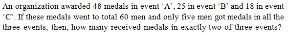
Hint 1: Let e1, e2, e3 be the numbers of men with exactly 1, 2, 3 medals.
Hint 2: e1 + e2 + e3 = 60 and e1 + 2e2 + 3e3 = 48 + 25 + 18.
What this tests: Counting with Venn diagrams
1. Subtract: e2 + 2e3 = 31.
2. e3 = 5, so e2 = 21.
Answer: (4)
If this felt hard: Revise Sets.
Claude’s answer: 4 · NTA final key: 4 · agrees · Answer recomputed by script (tools/verify_pyq_solutions.py)
Q2 · Mathematics · MCQ · ID 3666944176
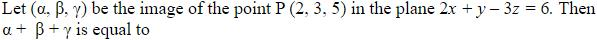
(1) 
(2) 
(4) 
Hint 1: Image of a point: Q = P − 2t n with t = (n·P − d)/|n|2.
Hint 2: n·P − 6 = 4 + 3 − 15 − 6 = −14, |n|2 = 14.
What this tests: Image of a point in a plane
1. Q = (2, 3, 5) + 2(2, 1, −3) = (6, 5, −1).
2. α + β + γ = 10.
Answer: (2)
If this felt hard: Revise Three Dimensional Geometry.
Claude’s answer: 2 · NTA final key: 2 · agrees · Answer recomputed with SymPy (tools/verify_pyq_solutions.py)
Q3 · Mathematics · MCQ · ID 3666944177
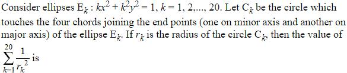
Hint 1: The chord x/a + y/b = 1 is tangent to the circle. Use the distance from the centre.
Hint 2: a2 = 1/k, b2 = 1/k2; 1/r2 = 1/a2 + 1/b2.
What this tests: Ellipse and tangent circles
1. 1/rk2 = k + k2.
2. Σk=120(k + k2) = 210 + 2870 = 3080.
Answer: (2)
If this felt hard: Revise Conic Sections.
Claude’s answer: 2 · NTA final key: 2 · agrees · Answer recomputed with SymPy (tools/verify_pyq_solutions.py)
Q4 · Mathematics · MCQ · ID 3666944178
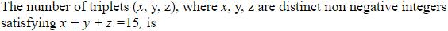
(1) 
(2)
Hint 1: Count all solutions, then remove those with equal values.
Hint 2: Total C(17,2) = 136. x = y: 2x + z = 15 has 8 solutions.
What this tests: Integer solutions
1. Solutions with some two equal: 3 × 8 − 2 × 1 = 22 (x = y = z = 5 counted once).
2. Distinct: 136 − 22 = 114.
Answer: (2)
If this felt hard: Revise Permutations and Combinations.
Claude’s answer: 2 · NTA final key: 2 · agrees · Answer recomputed by script (tools/verify_pyq_solutions.py)
Q5 · Mathematics · MCQ · ID 3666944179
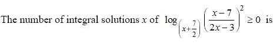
(1) 
(2) 
(3) 
Hint 1: The base must be positive and not 1. Split into base > 1 and 0 < base < 1.
Hint 2: logbu ≥ 0 means u ≥ 1 if b > 1, u ≤ 1 if b < 1. Here u = ((x − 7)/(2x − 3))2.
What this tests: Logarithmic inequalities
1. u ≥ 1 ⇔ (x − 7)2 ≥ (2x − 3)2 ⇔ −4 ≤ x ≤ 10/3.
2. Base > 1 (x > −5/2): integers −2, −1, 0, 1, 2, 3.
3. Base < 1 (−7/2 < x < −5/2): x = −3 fails.
4. 6 solutions.
Answer: (3)
If this felt hard: Remember the base condition. Revise Relations and Functions (logarithms).
Claude’s answer: 3 · NTA final key: 3 · agrees · Answer recomputed with SymPy (tools/verify_pyq_solutions.py)
Q6 · Mathematics · MCQ · ID 3666944180
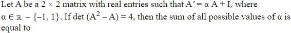
(1)
(2)
(3) 
(4) 
Hint 1: Transpose the equation and substitute it back into itself.
Hint 2: A = αA' + I = α(αA + I) + I, so A = I/(1 − α).
What this tests: Matrix equations
1. A = kI with k = 1/(1 − α).
2. det(A2 − A) = (k2 − k)2 = 4, so k2 − k = 2: k = 2 or −1.
3. α = 1/2 or 2; sum 5/2.
Answer: (1)
If this felt hard: Revise Matrices.
Claude’s answer: 1 · NTA final key: 1 · agrees · Answer recomputed with SymPy (tools/verify_pyq_solutions.py)
Q7 · Mathematics · MCQ · ID 3666944181
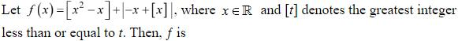
Hint 1: Check left and right limits at 0 and at 1.
Hint 2: Just left of 0: [x2 − x] = 0 but |−x + [x]| ≈ 1.
What this tests: Continuity with greatest integer
1. At 0: f(0) = 0 but the left limit is 1: discontinuous.
2. At 1: left limit −1 + 1 = 0, right limit 0 + 0 = 0, f(1) = 0: continuous.
Answer: (4)
If this felt hard: Revise Continuity and Differentiability.
Claude’s answer: 4 · NTA final key: 4 · agrees · Answer recomputed by script (tools/verify_pyq_solutions.py)
Q8 · Mathematics · MCQ · ID 3666944182
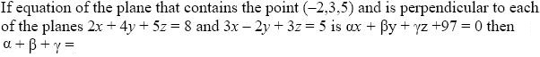
Hint 1: The normal is perpendicular to both given normals.
Hint 2: n = (2, 4, 5) × (3, −2, 3) = (22, 9, −16).
What this tests: Plane perpendicular to two planes
1. Plane: 22x + 9y − 16z + 97 = 0 (through (−2, 3, 5)).
2. α + β + γ = 15.
Answer: (1)
If this felt hard: Revise Three Dimensional Geometry.
Claude’s answer: 1 · NTA final key: 1 · agrees · Answer recomputed with SymPy (tools/verify_pyq_solutions.py)
Q9 · Mathematics · MCQ · ID 3666944183
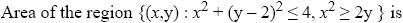
Hint 1: Sketch the circle (centre (0, 2), radius 2) and the parabola y = x2/2. Where do they meet?
Hint 2: They meet at y = 0 and y = 2 (x = ±2).
What this tests: Area between curves
1. Region: between the lower semicircle y = 2 − √(4 − x2) and the parabola, for |x| ≤ 2.
2. Area = ∫−22(x2/2 − 2 + √(4 − x2)) dx = 8/3 − 8 + 2π.
3. = 2π − 16/3.
Answer: (2)
If this felt hard: Revise Application of Integrals.
Claude’s answer: 2 · NTA final key: 2 · agrees · Answer recomputed with SymPy (tools/verify_pyq_solutions.py)
Q10 · Mathematics · MCQ · ID 3666944184
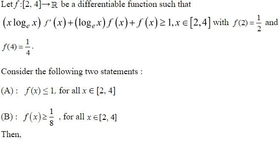
Hint 1: The left side is the derivative of one product. Which?
Hint 2: (x ln x · f(x))' ≥ 1, so h(x) = x ln x f(x) − x is increasing.
What this tests: Using monotonic functions to bound
1. h(x) ≥ h(2) gives f(x) ≥ (x − 2 + ln 2)/(x ln x) ≥ 1/8 on [2, 4].
2. h(x) ≤ h(4) gives f(x) ≤ (x − 4 + 2 ln 2)/(x ln x) ≤ 1.
3. Both statements are true.
Answer: (3)
If this felt hard: Revise Application of Derivatives.
Claude’s answer: 3 · NTA final key: 3 · agrees · Theory question: not computable, needs a teacher’s review
Note: Teacher look: the data are inconsistent (h(4) − h(2) = ln 2 − 2 < 0, so no such f exists); NTA's key uses the bounds above, and both statements hold.
Q11 · Mathematics · MCQ · ID 3666944185
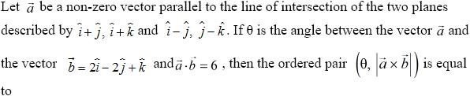
Hint 1: The normal of each plane is the cross product of its two vectors.
Hint 2: n1 = (1, −1, −1), n2 = (1, 1, 1); a ∥ n1 × n2 ∥ (0, −1, 1).
What this tests: Vectors and planes
1. a = t(0, −1, 1); a·b = 3t = 6, so a = (0, −2, 2), |a| = 2√2, |b| = 3.
2. cos θ = 6/(6√2): θ = π/4.
3. |a × b| = 2√2 × 3 × sin(π/4) = 6.
Answer: (4)
If this felt hard: Revise Vector Algebra.
Claude’s answer: 4 · NTA final key: 4 · agrees · Answer recomputed with SymPy (tools/verify_pyq_solutions.py)
Q12 · Mathematics · MCQ · ID 3666944186
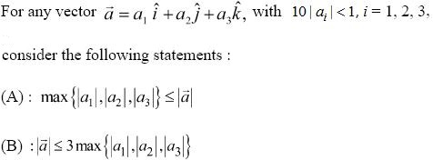
Hint 1: Compare |a| = √(a12 + a22 + a32) with the largest |ai|.
Hint 2: |a|2 ≤ 3 max2.
What this tests: Vector magnitudes
1. A: max |ai| ≤ |a|: true.
2. B: |a| ≤ √3 max ≤ 3 max: true.
Answer: (3)
If this felt hard: Revise Vector Algebra.
Claude’s answer: 3 · NTA final key: 3 · agrees · Theory question: not computable, needs a teacher’s review
Note: The condition 10|a_{i}| < 1 does not matter.
Q13 · Mathematics · MCQ · ID 3666944187
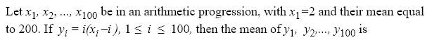
(2)
(3)
(4)
Hint 1: Find the common difference from the mean.
Hint 2: Mean = 2 + 99d/2 = 200, so d = 4 and xi = 4i − 2.
What this tests: AP and sums of squares
1. yi = i(3i − 2) = 3i2 − 2i.
2. Mean = (3 × 338350 − 2 × 5050)/100 = 10049.5.
Answer: (2)
If this felt hard: Revise Sequences and Series.
Claude’s answer: 2 · NTA final key: 2 · agrees · Answer recomputed with SymPy (tools/verify_pyq_solutions.py)
Q14 · Mathematics · MCQ · ID 3666944188
(1)
(2)
(3)
(4)
Hint 1: Rotation by 90° anticlockwise multiplies by i; clockwise by −i.
Hint 2: w1 = −4 + 5i, w2 = 5 − 3i.
What this tests: Rotation of complex numbers
1. w1 − w2 = −9 + 8i (second quadrant).
2. Principal argument = π − tan−1(8/9).
Answer: (3)
If this felt hard: Revise Complex Numbers.
Claude’s answer: 3 · NTA final key: 3 · agrees · Answer recomputed with SymPy (tools/verify_pyq_solutions.py)
Q15 · Mathematics · MCQ · ID 3666944189
(1)
(2)
(3)
(4)
Hint 1: Put t = ex. The log is sinh−1t.
Hint 2: ∫ ln(t + √(1 + t2)) dt = t ln(t + √(1 + t2)) − √(1 + t2).
What this tests: Definite integrals by substitution
1. Limits t = 1/2 to 2.
2. Value = 2 ln(2 + √5) − √5 − (1/2)ln((1 + √5)/2) + √5/2.
3. = ln(√2(2 + √5)2/√(1 + √5)) − √5/2.
Answer: (2)
If this felt hard: Revise Integrals.
Claude’s answer: 2 · NTA final key: 2 · agrees · Answer recomputed with SymPy (tools/verify_pyq_solutions.py)
Q16 · Mathematics · MCQ · ID 3666944190
(1) 
(2) 
(3) 
(4) 
Hint 1: Write everything in c = cos2θ.
Hint 2: 3c2 − 5c + 2 = (3c − 2)(c − 1) and sin6θ = (1 − c)3.
What this tests: Trigonometric equations
1. Equation becomes c(1 − c)(1 − 2c) = 0.
2. c = 0: 2 values; c = 1: 0, π, 2π (3); c = 1/2: 4 values.
3. Total 9.
Answer: (2)
If this felt hard: Count endpoints 0 and 2π carefully. Revise Trigonometric Functions.
Claude’s answer: 2 · NTA final key: 2 · agrees · Answer recomputed with SymPy (tools/verify_pyq_solutions.py)
Q17 · Mathematics · MCQ · ID 3666944191
(1)
(2)
(3)
(4)
Hint 1: Count singular matrices: ad = bc.
Hint 2: Products from {0, 1, 2}: 0 (5 ways), 1 (1), 2 (2), 4 (1).
What this tests: Probability with matrices
1. Singular = 52 + 12 + 22 + 12 = 31.
2. Invertible = 81 − 31 = 50.
3. P = 50/81.
Answer: (4)
If this felt hard: Revise Probability and Determinants.
Claude’s answer: 4 · NTA final key: 4 · agrees · Answer recomputed by script (tools/verify_pyq_solutions.py)
Q18 · Mathematics · MCQ · ID 3666944192
(1)
(2)
(3)
(4)
Hint 1: Shifting all values changes the mean, not the variance.
Hint 2: New sets: mean 2, variance 12; mean 10, variance 20.
What this tests: Combined variance
1. Combined mean 6.
2. Variance = (12 + 20)/2 + ((2 − 6)2 + (10 − 6)2)/2 = 16 + 16 = 32.
3. Sum 38.
Answer: (1)
If this felt hard: Revise Statistics.
Claude’s answer: 1 · NTA final key: 1 · agrees · Answer recomputed by script (tools/verify_pyq_solutions.py)
Q19 · Mathematics · MCQ · ID 3666944193
(1)
(2)
(3)
(4)
Hint 1: The triangle OAB is the smaller part.
Hint 2: Area of R = 10, so (1/2)αβ = 2.
What this tests: Locus
1. αβ = 4.
2. Mid-point (h, k) = (α/2, β/2): hk = 1, a hyperbola.
Answer: (3)
If this felt hard: Revise Straight Lines and Conic Sections.
Claude’s answer: 3 · NTA final key: 3 · agrees · Theory question: not computable, needs a teacher’s review
Q20 · Mathematics · MCQ · ID 3666944194
(1)
(2)
(3)
(4)
Hint 1: y dx + x dy = d(xy). Put u = xy.
Hint 2: du/(1 − u2) = dx.
What this tests: Exact differential equations
1. ln|(1 + u)/(1 − u)| = 2x + C; at (1, 2): u = 2, so C = ln 3 − 2.
2. At x = 2: |(1 + u)/(1 − u)| = 3e2; staying on the branch u > 1, (1 + u)/(1 − u) = −3e2.
3. u = (1 + 3e2)/(3e2 − 1), α = u/2.
Answer: (3)
If this felt hard: Revise Differential Equations.
Claude’s answer: 3 · NTA final key: 3 · agrees · Answer recomputed with SymPy (tools/verify_pyq_solutions.py)
Q21 · Mathematics · Numerical · ID 3666944195
Hint 1: Sum of all coefficients is 39. Remove those of x0, x8, x9.
Hint 2: Coefficient of xr = C(9,r)29−r.
What this tests: Binomial coefficients
1. 19683 − 512 − 18 − 1 = 19152.
2. Mean = 19152/7 = 2736.
Answer: 2736
If this felt hard: Revise Binomial Theorem.
Claude’s answer: 2736 · NTA final key: 2736 · agrees · Answer recomputed by script (tools/verify_pyq_solutions.py)
Q22 · Mathematics · Numerical · ID 3666944196
Hint 1: l is along d1 × d2.
Hint 2: (1, 2, 3) × (2, 2, 1) = (−4, 5, −2).
What this tests: Lines in space
1. P = l ∩ l1 = (4, −5, 2).
2. Foot on l2: μ = 1/9, Q = (−7/9, 2/9, 10/9).
3. 9(α + β + γ) = 5.
Answer: 5
If this felt hard: Revise Three Dimensional Geometry.
Claude’s answer: 5 · NTA final key: 5 · agrees · Answer recomputed with SymPy (tools/verify_pyq_solutions.py)
Q23 · Mathematics · Numerical · ID 3666944197
Hint 1: When is an implication false?
Hint 2: Only when (p ∨ q) ∧ (p ∨ r) is true and q ∨ r is false.
What this tests: Truth tables
1. q = r = F forces p = T: one false case.
2. 8 − 1 = 7.
Answer: 7
If this felt hard: Revise Mathematical Reasoning.
Claude’s answer: 7 · NTA final key: 7 · agrees · Answer recomputed by script (tools/verify_pyq_solutions.py)
Note: Mathematical reasoning is no longer in the JEE Main syllabus.
Q24 · Mathematics · Numerical · ID 3666944198
Hint 1: a2 = 7a + 1 gives Sn = 7Sn−1 + Sn−2 with Sn = an + bn.
Hint 2: Write S21 and S17 in terms of S19, S18.
What this tests: Recurrences for powers of roots
1. S21 = 50S19 + 7S18; S17 = S19 − 7S18.
2. S21 + S17 = 51S19.
Answer: 51
If this felt hard: Revise Quadratic Equations.
Claude’s answer: 51 · NTA final key: 51 · agrees · Answer recomputed with SymPy (tools/verify_pyq_solutions.py)
Q25 · Mathematics · Numerical · ID 3666944199
Hint 1: This is an arithmetico-geometric sum: Σ(109 − k)/5k, k = 0..108.
Hint 2: Use S − S/5.
What this tests: Arithmetico-geometric series
1. S = (25/16)(87 + 5−110).
2. 16S = 2175 + 5−108 = 2175 + 25−54.
3. 16S − 25−54 = 2175.
Answer: 2175
If this felt hard: Revise Sequences and Series.
Claude’s answer: 2175 · NTA final key: 2175 · agrees · Answer recomputed with SymPy (tools/verify_pyq_solutions.py)
Q26 · Mathematics · Numerical · ID 3666944200
Hint 1: Differentiate t11(1 + 3t)6.
Hint 2: d/dt = 11t10(1 + 3t)6 + 18t11(1 + 3t)5.
What this tests: Integration by recognising a derivative
1. 11α(10,6) + 18α(11,5) = [t11(1 + 3t)6]02 = 211 × 76.
2. = 32 × 146, so p = 32.
Answer: 32
If this felt hard: Revise Integrals.
Claude’s answer: 32 · NTA final key: 32 · agrees · Answer recomputed with SymPy (tools/verify_pyq_solutions.py)
Q27 · Mathematics · Numerical · ID 3666944201
Hint 1: General term: 3(680 − r)/2 × 5r/4.
Hint 2: Need r ≡ 0 (mod 4); then 680 − r is even too.
What this tests: Integral terms in binomial expansions
1. r = 0, 4, …, 680: 171 values.
Answer: 171
If this felt hard: Revise Binomial Theorem.
Claude’s answer: 171 · NTA final key: 171 · agrees · Answer recomputed by script (tools/verify_pyq_solutions.py)
Q28 · Mathematics · Numerical · ID 3666944202
Hint 1: e2 = 1 + (3 + n)/(1 + n) = 2(n + 2)/(n + 1). When is this a perfect square?
Hint 2: Try even n until 2(n + 2)(n + 1) is a perfect square.
What this tests: Hyperbola
1. n = 48: e2 = 100/49, e = 10/7.
2. a2 = 49, b2 = 51: l = 2b2/a = 102/7.
3. 21l = 306.
Answer: 306
If this felt hard: Revise Conic Sections.
Claude’s answer: 306 · NTA final key: 306 · agrees · Answer recomputed with SymPy (tools/verify_pyq_solutions.py)
Q29 · Mathematics · Numerical · ID 3666944203
Hint 1: A3 = A means the eigenvalues are 0 or ±1. Trace = 0.
Hint 2: So the eigenvalues are 0, 1, −1: det A = 0 and the sum of 2 × 2 principal minors = −1.
What this tests: Matrix equations and eigenvalues
1. det A = 3 + 2ac = 0.
2. −a − 2 − 3c = −1, so a + 3c = −1.
3. 2a2 + 2a − 9 = 0: a = (√19 − 1)/2 ≈ 1.68, in (1, 2]. n = 2.
Answer: 2
If this felt hard: Revise Matrices (characteristic equation).
Claude’s answer: 2 · NTA final key: 2 · agrees · Answer recomputed with SymPy (tools/verify_pyq_solutions.py)
Note: Uses eigenvalues (beyond NCERT); the result was checked by solving A^{3} = A directly.
Q30 · Mathematics · Numerical · ID 3666944204
Hint 1: This is a derangement count.
Hint 2: D5 = 5!(1 − 1/1! + 1/2! − 1/3! + 1/4! − 1/5!).
What this tests: Derangements
1. D5 = 44.
Answer: 44
If this felt hard: Revise Permutations and Combinations.
Claude’s answer: 44 · NTA final key: 44 · agrees · Answer recomputed by script (tools/verify_pyq_solutions.py)
Q31 · Physics · MCQ · ID 3666944205
(1)
(2)
(3)
(4)
Hint 1: Range d = √(2Rh).
Hint 2: h = d2/2R.
What this tests: Line-of-sight communication
1. h = 16 × 106/(2 × 6.4 × 106) = 1.25 m = 125 × 10−2 m.
Answer: (3)
If this felt hard: Revise Communication Systems.
Claude’s answer: 3 · NTA final key: 3 · agrees · Answer recomputed by script (tools/verify_pyq_solutions.py)
Note: Communication systems is no longer in the JEE Main syllabus.
Q32 · Physics · MCQ · ID 3666944206
(1)
(2) 
(3)
(4)
Hint 1: The first two gates have one input each: what do they do?
Hint 2: Y = NOR(ā, b̄).
What this tests: Logic gates
1. NOR(ā, b̄) = a·b (De Morgan): AND.
Answer: (3)
If this felt hard: Revise Semiconductor Electronics.
Claude’s answer: 3 · NTA final key: 3 · agrees · Theory question: not computable, needs a teacher’s review
Note: Figure reading: two NOT gates feeding a NOR gate.
Q33 · Physics · MCQ · ID 3666944207
(1)
(2)
(3)
(4)
Hint 1: Topic: Half-life and mean life. Which rule or fact from it settles this question?
Hint 2: T1/2 = ln 2/λ, mean life τ = 1/λ.
What this tests: Half-life and mean life
1. ln 2/λA = 1/λB, so λA = λB ln 2.
Answer: (2)
If this felt hard: Revise Nuclei.
Claude’s answer: 2 · NTA final key: 2 · agrees · Answer recomputed by script (tools/verify_pyq_solutions.py)
Q34 · Physics · MCQ · ID 3666944208
(1)
(2)
(3)
(4)
Hint 1: Write Einstein's equation for both wavelengths.
Hint 2: eV0 = hc/λ − φ and eV0/4 = hc/2λ − φ.
What this tests: Photoelectric effect
1. Subtract: (3/4)eV0 = hc/2λ, eV0 = 2hc/3λ.
2. φ = hc/3λ, so λ0 = 3λ.
Answer: (3)
If this felt hard: Revise Dual Nature of Radiation and Matter.
Claude’s answer: 3 · NTA final key: 3 · agrees · Answer recomputed with SymPy (tools/verify_pyq_solutions.py)
Q35 · Physics · MCQ · ID 3666944209
(1)
(2)
(3)
(4)
Hint 1: sin C = 1/μ.
Hint 2: μ = √2, v = c/μ.
What this tests: Critical angle
1. v = 3 × 108/√2 = 2.12 × 108 m/s.
Answer: (1)
If this felt hard: Revise Ray Optics.
Claude’s answer: 1 · NTA final key: 1 · agrees · Answer recomputed by script (tools/verify_pyq_solutions.py)
Q36 · Physics · MCQ · ID 3666944210
(1)
(2)
(3)
(4)
Hint 1: Which reactance falls with frequency and which rises linearly?
Hint 2: XC = 1/ωC; XL = ωL.
What this tests: Reactance
1. A (falling) = XC; B (straight line) = XL.
Answer: (1)
If this felt hard: Revise Alternating Current.
Claude’s answer: 1 · NTA final key: 1 · agrees · Theory question: not computable, needs a teacher’s review
Q37 · Physics · MCQ · ID 3666944211
(1)
(2)
(3)
(4)
Hint 1: Topic: Energy in EM waves. Which rule or fact from it settles this question?
Hint 2: Average energy density of an EM wave = ε0E02/2 (electric + magnetic).
What this tests: Energy in EM waves
1. u = 0.5 × 8.85 × 10−12 × 400 = 1.77 × 10−9 J/m3.
2. Energy = 1.77 × 10−9 × 5 × 10−4 = 8.85 × 10−13 J.
Answer: (1)
If this felt hard: Revise Electromagnetic Waves.
Claude’s answer: 1 · NTA final key: 1 · agrees · Answer recomputed by script (tools/verify_pyq_solutions.py)
Q38 · Physics · MCQ · ID 3666944212
(1)
(2)
(3)
(4)
Hint 1: Topic: Magnetic susceptibility. Which rule or fact from it settles this question?
Hint 2: B = μ0(1 + χ)H.
What this tests: Magnetic susceptibility
1. Increase = χ = 2%.
Answer: (1)
If this felt hard: Revise Magnetism and Matter.
Claude’s answer: 1 · NTA final key: 1 · agrees · Answer recomputed by script (tools/verify_pyq_solutions.py)
Q39 · Physics · MCQ · ID 3666944213
(1)
(2)
(3)
(4)
Hint 1: Voltage sensitivity = current sensitivity/R.
Hint 2: R unchanged.
What this tests: Galvanometer sensitivity
1. +25%.
Answer: (1)
If this felt hard: Revise Moving Charges and Magnetism.
Claude’s answer: 1 · NTA final key: 1 · agrees · Answer recomputed by script (tools/verify_pyq_solutions.py)
Q40 · Physics · MCQ · ID 3666944214
(1)
(2) 
(3) 
(4) 
Hint 1: Heat at the same voltage: H ∝ 1/R.
Hint 2: Parallel R/2, series 2R.
What this tests: Joule heating
1. Ratio = 2R/(R/2) = 4 : 1.
Answer: (2)
If this felt hard: Revise Current Electricity.
Claude’s answer: 2 · NTA final key: 2 · agrees · Answer recomputed by script (tools/verify_pyq_solutions.py)
Q41 · Physics · MCQ · ID 3666944215
(1) 
(2)
(3)
(4) 
Hint 1: Topic: Charge sharing. Which rule or fact from it settles this question?
Hint 2: Charge is shared equally; the voltage halves.
What this tests: Charge sharing
1. E1 = (1/2)(2)V2 = V2; E2 = (1/2)(4)(V/2)2 = V2/2.
2. E2/E1 = 1 : 2.
Answer: (1)
If this felt hard: Revise Electrostatic Potential and Capacitance.
Claude’s answer: 1 · NTA final key: 1 · agrees · Answer recomputed by script (tools/verify_pyq_solutions.py)
Q42 · Physics · MCQ · ID 3666944216
(1)
(2)
(3)
(4)
Hint 1: Topic: Energy in SHM. Which rule or fact from it settles this question?
Hint 2: KE = (1/2)k(A2 − x2).
What this tests: Energy in SHM
1. Maximum at x = 0, falling to 0 at x = A along a parabola (concave down): graph 4.
Answer: (4)
If this felt hard: Revise Oscillations.
Claude’s answer: 4 · NTA final key: 4 · agrees · Theory question: not computable, needs a teacher’s review
Q43 · Physics · MCQ · ID 3666944217
(1)
(2)
(3)
(4)
Hint 1: vrms = √(3RT/M).
Hint 2: Same T: depends only on M.
What this tests: RMS speed
1. M: Ne 20 < Cl2 71 < UF6 352.
2. vrms: mono > dia > poly.
Answer: (1)
If this felt hard: Revise Kinetic Theory.
Claude’s answer: 1 · NTA final key: 1 · agrees · Answer recomputed by script (tools/verify_pyq_solutions.py)
Q44 · Physics · MCQ · ID 3666944218
(1)
(2)
(3)
(4)
Hint 1: Topic: First law. Which rule or fact from it settles this question?
Hint 2: ΔU = Q − W with W = PΔV.
What this tests: First law
1. W = 105 × 1.670 = 167 kJ.
2. ΔU = 2257 − 167 = 2090 kJ.
Answer: (2)
If this felt hard: Revise Thermodynamics.
Claude’s answer: 2 · NTA final key: 2 · agrees · Answer recomputed by script (tools/verify_pyq_solutions.py)
Q45 · Physics · MCQ · ID 3666944219
(1)
(2)
(3)
(4)
Hint 1: Topic: Temperature scales. Which rule or fact from it settles this question?
Hint 2: Linear scales: (X − Xice)/(Xsteam − Xice) = (F − 32)/180.
What this tests: Temperature scales
1. (−95 + 15)/80 = −1.
2. F = 32 − 180 = −148 °F.
Answer: (4)
If this felt hard: Revise Thermal Properties of Matter.
Claude’s answer: 4 · NTA final key: 4 · agrees · Answer recomputed by script (tools/verify_pyq_solutions.py)
Q46 · Physics · MCQ · ID 3666944220
(1)
(2) 
(3) 
(4)
Hint 1: g = GM/R2 = (4/3)πGρR.
Hint 2: g ∝ ρR.
What this tests: Gravity on planets
1. gA : gB = ρR : (ρ/3)(4R) = 3 : 4.
Answer: (3)
If this felt hard: Revise Gravitation.
Claude’s answer: 3 · NTA final key: 3 · agrees · Answer recomputed by script (tools/verify_pyq_solutions.py)
Q47 · Physics · MCQ · ID 3666944221
(1) 
(2)
(3)
(4)
Hint 1: Distance = total area; displacement = signed area.
Hint 2: Areas: 25, 50, 75, 50 above; 50 below.
What this tests: v–t graphs
1. Distance = 250 m; displacement = 150 m.
2. Ratio 5/3.
Answer: (3)
If this felt hard: Revise Motion in a Straight Line.
Claude’s answer: 3 · NTA final key: 3 · agrees · Answer recomputed by script (tools/verify_pyq_solutions.py)
Q48 · Physics · MCQ · ID 3666944222
(1)
(2)
(3)
(4)
Hint 1: Just slipping: μmg = mω2r.
Hint 2: r ∝ 1/ω2.
What this tests: Circular motion and friction
1. ω halves, r becomes 4 × 1 = 4 cm.
Answer: (3)
If this felt hard: Revise Laws of Motion.
Claude’s answer: 3 · NTA final key: 3 · agrees · Answer recomputed by script (tools/verify_pyq_solutions.py)
Q49 · Physics · MCQ · ID 3666944223
(1) 
(2)
(3)
(4) 
Hint 1: Topic: Impulse. Which rule or fact from it settles this question?
Hint 2: Force = rate of change of momentum = nmv.
What this tests: Impulse
1. n = 125/(0.01 × 250) = 50 per second.
Answer: (3)
If this felt hard: Revise Laws of Motion.
Claude’s answer: 3 · NTA final key: 3 · agrees · Answer recomputed by script (tools/verify_pyq_solutions.py)
Q50 · Physics · MCQ · ID 3666944224
(1)
(2)
(3)
(4)
Hint 1: Compare 1 AU, 1 ly and 1 pc.
Hint 2: 1 pc ≈ 3.26 ly.
What this tests: Astronomical units
1. I correct.
2. II incorrect: AU < ly < parsec.
Answer: (3)
If this felt hard: Revise Units and Measurements.
Claude’s answer: 3 · NTA final key: 3 · agrees · Theory question: not computable, needs a teacher’s review
Q51 · Physics · Numerical · ID 3666944225
Hint 1: Six lines means n(n − 1)/2 = 6.
Hint 2: n = 4.
What this tests: Hydrogen spectrum
1. E = 13.6(1 − 1/16) = 12.75 eV.
2. ν = 12.75/(4.25 × 10−15) = 3 × 1015 Hz.
Answer: 3
If this felt hard: Revise Atoms.
Claude’s answer: 3 · NTA final key: 3 · agrees · Answer recomputed by script (tools/verify_pyq_solutions.py)
Q52 · Physics · Numerical · ID 3666944226
Hint 1: Topic: Lens in a liquid. Which rule or fact from it settles this question?
Hint 2: Lens maker: P ∝ (μlens/μmedium − 1).
What this tests: Lens in a liquid
1. Air: 0.8. Liquid: 1.8/1.5 − 1 = 0.2.
2. Ratio 4.
Answer: 4
If this felt hard: Revise Ray Optics.
Claude’s answer: 4 · NTA final key: 4 · agrees · Answer recomputed by script (tools/verify_pyq_solutions.py)
Q53 · Physics · Numerical · ID 3666944227
Hint 1: emf = A dB/dt; read the slope from the graph.
Hint 2: B rises 2 mT per second.
What this tests: Faraday's law
1. emf = 4 × 2 × 10−3 = 8 × 10−3 V = 8 mV.
Answer: 8
If this felt hard: Revise Electromagnetic Induction.
Claude’s answer: 8 · NTA final key: 8 · agrees · Answer recomputed by script (tools/verify_pyq_solutions.py)
Note: Figure reading: B = 2t mT.
Q54 · Physics · Numerical · ID 3666944228
Hint 1: Look at the cell polarities: do they help or oppose?
Hint 2: The cells oppose: net emf 4 V. 3 ∥ 6 = 2 Ω.
What this tests: Kirchhoff's laws
1. Total R = 0.5 + 1 + 4.5 + 2 = 8 Ω; I = 0.5 A.
2. Through 3 Ω: 0.5 × 6/9 = 1/3 A.
3. x = 1.
Answer: 1
If this felt hard: Revise Current Electricity.
Claude’s answer: 1 · NTA final key: 1 · agrees · Answer recomputed by script (tools/verify_pyq_solutions.py)
Note: Figure reading: the two cells are connected in opposition.
Q55 · Physics · Numerical · ID 3666944229
Hint 1: For the charge on the incline, balance repulsion along the incline against mg sin 30°.
Hint 2: Separation along the incline = h/sin 30° = 2h.
What this tests: Electrostatic equilibrium
1. kq2/(4h2) = mg/2.
2. h2 = 9 × 109 × 4 × 10−12/(2 × 0.02 × 10) = 0.09, h = 0.3 m.
Answer: 300
If this felt hard: Revise Electric Charges and Fields.
Claude’s answer: 300 · NTA final key: 300 · agrees · Answer recomputed by script (tools/verify_pyq_solutions.py)
Note: Figure reading: one charge fixed at the top of the vertical, the other free on the frictionless incline.
Q56 · Physics · Numerical · ID 3666944230
Hint 1: Topic: Wave speed. Which rule or fact from it settles this question?
Hint 2: v = (coefficient of t)/(coefficient of x).
What this tests: Wave speed
1. v = 160/0.5 = 320 m/s = 1152 km/h.
Answer: 1152
If this felt hard: Revise Waves.
Claude’s answer: 1152 · NTA final key: 1152 · agrees · Answer recomputed by script (tools/verify_pyq_solutions.py)
Q57 · Physics · Numerical · ID 3666944231
Hint 1: Write l = L + F/k for both tensions.
Hint 2: l1 = L + 100a, l2 = L + 120a.
What this tests: Hooke's law
1. 10l2 = 11l1 gives L = 100a, l1 = 200a.
2. L = l1/2: x = 2.
Answer: 2
If this felt hard: Revise Mechanical Properties of Solids.
Claude’s answer: 2 · NTA final key: 2 · agrees · Answer recomputed by script (tools/verify_pyq_solutions.py)
Q58 · Physics · Numerical · ID 3666944232
Hint 1: Topic: Moment of inertia. Which rule or fact from it settles this question?
Hint 2: Itangent = (7/5)MR2; L = (2/5)MR2ω.
What this tests: Moment of inertia
1. Ratio = (7/5)/((2/5) × 10) = 0.35 = 35 × 10−2.
Answer: 35
If this felt hard: Revise System of Particles and Rotational Motion.
Claude’s answer: 35 · NTA final key: 35 · agrees · Answer recomputed by script (tools/verify_pyq_solutions.py)
Q59 · Physics · Numerical · ID 3666944233
Hint 1: Topic: Work by a variable force. Which rule or fact from it settles this question?
Hint 2: W = ∫F dx.
What this tests: Work by a variable force
1. ∫04(2 + 3x) dx = 8 + 24 = 32 J.
Answer: 32
If this felt hard: Revise Work, Energy and Power.
Claude’s answer: 32 · NTA final key: 32 · agrees · Answer recomputed with SymPy (tools/verify_pyq_solutions.py)
Q60 · Physics · Numerical · ID 3666944234
Hint 1: Same height at 3 s and 5 s: the time of flight is their sum.
Hint 2: T = 8 s = 2u sin θ/g.
What this tests: Projectile motion
1. u = 8 × 10/(2 × 0.5) = 80 m/s.
Answer: 80
If this felt hard: Revise Motion in a Plane.
Claude’s answer: 80 · NTA final key: 80 · agrees · Answer recomputed by script (tools/verify_pyq_solutions.py)
Q61 · Chemistry · MCQ · ID 3666944235
(1)
(2)
(3)
(4)
Hint 1: Topic: Photoelectric effect. Which rule or fact from it settles this question?
Hint 2: Does every photon give its energy to an electron?
What this tests: Photoelectric effect
1. A true: emission is instantaneous above threshold.
2. R false as worded (NTA's key).
Answer: (3)
If this felt hard: Revise Structure of Atom.
Claude’s answer: 3 · NTA final key: 3 · agrees · Theory question: not computable, needs a teacher’s review
Note: Teacher look: R is judged false by NTA; a photon below threshold still gets absorbed but cannot eject the electron.
Q62 · Chemistry · MCQ · ID 3666944236
(1)
(2)
(3)
(4)
Hint 1: Topic: Shapes. Which rule or fact from it settles this question?
Hint 2: Use VSEPR.
What this tests: Shapes
1. H3O+ pyramidal, acetylide linear, NH4+ tetrahedral, ClO2− bent.
Answer: (1)
If this felt hard: Revise Chemical Bonding.
Claude’s answer: 1 · NTA final key: 1 · agrees · Theory question: not computable, needs a teacher’s review
Q63 · Chemistry · MCQ · ID 3666944237
(1)
(2)
(3)
(4)
Hint 1: Find the limiting reagent.
Hint 2: Ag+: 25 mmol, I−: 26.25 mmol.
What this tests: Precipitation
1. AgI precipitates; I− left is only 1.25 mmol and Ag+ is tiny (Ksp).
2. K+ and NO3− remain at about 0.5 M.
Answer: (2)
If this felt hard: Revise Equilibrium.
Claude’s answer: 2 · NTA final key: 2 · agrees · Answer recomputed by script (tools/verify_pyq_solutions.py)
Q64 · Chemistry · MCQ · ID 3666944238
(1)
(2)
(3)
(4)
Hint 1: Topic: Ionisation enthalpy. Which rule or fact from it settles this question?
Hint 2: IE rises across a period but with breaks at B and O.
What this tests: Ionisation enthalpy
1. Li < B < Be < C < O < N < F.
Answer: (2)
If this felt hard: Revise Classification of Elements.
Claude’s answer: 2 · NTA final key: 2 · agrees · Theory question: not computable, needs a teacher’s review
Q65 · Chemistry · MCQ · ID 3666944239
(1)
(2)
(3)
(4)
Hint 1: Topic: Extraction of copper. Which rule or fact from it settles this question?
Hint 2: What is the copper from the Bessemer converter called?
What this tests: Extraction of copper
1. Blister copper.
Answer: (3)
If this felt hard: Revise General Principles of Isolation of Elements.
Claude’s answer: 3 · NTA final key: 3 · agrees · Theory question: not computable, needs a teacher’s review
Note: Metallurgy is no longer in the JEE Main syllabus.
Q66 · Chemistry · MCQ · ID 3666944240
(1)
(2)
(3)
(4)
Hint 1: Topic: Hydrogen and nitrogen. Which rule or fact from it settles this question?
Hint 2: Recall steam reforming and the lab method for N2.
What this tests: Hydrogen and nitrogen
1. CH4 + H2O → CO + 3H2 (Ni): true.
2. NaNO2 + NH4Cl → NaCl + N2 + 2H2O: true.
Answer: (1)
If this felt hard: Revise Hydrogen and The p-Block Elements.
Claude’s answer: 1 · NTA final key: 1 · agrees · Theory question: not computable, needs a teacher’s review
Q67 · Chemistry · MCQ · ID 3666944241
(1)
(2)
(3) 
(4)
Hint 1: Topic: Uses of alkali metals. Which rule or fact from it settles this question?
Hint 2: Recall NCERT uses.
What this tests: Uses of alkali metals
1. K: Na–K pump (III). KCl: fertilizer (II). KOH: absorbs CO2 (IV). Li: thermonuclear (I).
Answer: (4)
If this felt hard: Revise The s-Block Elements.
Claude’s answer: 4 · NTA final key: 4 · agrees · Theory question: not computable, needs a teacher’s review
Note: s-block is no longer in the JEE Main syllabus.
Q68 · Chemistry · MCQ · ID 3666944242
(1)
(2)
(3)
(4)
Hint 1: Topic: Group 13 compounds. Which rule or fact from it settles this question?
Hint 2: GaAlCl4 is Ga+[AlCl4]−.
What this tests: Group 13 compounds
1. Ga is +1 and not bonded to Cl; Ga (1.8) is more electronegative than Al (1.5) and is the cation.
Answer: (3)
If this felt hard: Revise The p-Block Elements.
Claude’s answer: 3 · NTA final key: 3 · agrees · Theory question: not computable, needs a teacher’s review
Q69 · Chemistry · MCQ · ID 3666944243
(1)
(2)
(3)
(4)
Hint 1: Topic: Geometrical isomerism. Which rule or fact from it settles this question?
Hint 2: Which complex is of the MA3B3 type?
What this tests: Geometrical isomerism
1. [Co(NH3)3(NO2)3] has fac and mer isomers.
Answer: (1)
If this felt hard: Revise Coordination Compounds.
Claude’s answer: 1 · NTA final key: 1 · agrees · Theory question: not computable, needs a teacher’s review
Q70 · Chemistry · MCQ · ID 3666944244
(1)
(2)
(3)
(4)
Hint 1: Which ligands can bind through two different atoms?
Hint 2: NO2− and NCS− are ambidentate.
What this tests: Ambidentate ligands
1. C2O42−, en, H2O: none ambidentate.
Answer: (3)
If this felt hard: Revise Coordination Compounds.
Claude’s answer: 3 · NTA final key: 3 · agrees · Theory question: not computable, needs a teacher’s review
Q71 · Chemistry · MCQ · ID 3666944245
(1)
(2)
(3) 
(4)
Hint 1: Topic: Water quality. Which rule or fact from it settles this question?
Hint 2: Recall the limits: clean water BOD < 5 ppm; Zn 5 ppm, NO3− 50 ppm.
What this tests: Water quality
1. Both statements correct.
Answer: (1)
If this felt hard: Revise Environmental Chemistry.
Claude’s answer: 1 · NTA final key: 1 · agrees · Theory question: not computable, needs a teacher’s review
Note: Environmental chemistry is no longer in the JEE Main syllabus.
Q72 · Chemistry · MCQ · ID 3666944246
(1)
(2)
(3)
(4)
Hint 1: Topic: Chromatography. Which rule or fact from it settles this question?
Hint 2: Higher Rf means weaker adsorption: elutes first.
What this tests: Chromatography
1. Rf: A > C > B, so elution A, C, B.
Answer: (2)
If this felt hard: Revise Organic Chemistry: Some Basic Principles.
Claude’s answer: 2 · NTA final key: 2 · agrees · Theory question: not computable, needs a teacher’s review
Note: Figure reading: A highest, C slightly lower, B lowest.
Q73 · Chemistry · MCQ · ID 3666944247
(1)
(2)
(3)
(4)
Hint 1: Which groups are directly on the aromatic ring?
Hint 2: c: C=O (deactivating). a: alkyl only. b: OH + alkyl. d: OH + OR.
What this tests: Electrophilic substitution
1. c < a < b < d.
Answer: (1)
If this felt hard: Revise Hydrocarbons.
Claude’s answer: 1 · NTA final key: 1 · agrees · Theory question: not computable, needs a teacher’s review
Q74 · Chemistry · MCQ · ID 3666944248
(1)
(2)
(3)
(4)
Hint 1: Which benzyl cation is stabilised by its substituent?
Hint 2: p-OMe stabilises the cation (SN1); p-NO2 destabilises it (SN2).
What this tests: SN1 vs SN2
1. (I) first order, (II) second order.
Answer: (1)
If this felt hard: Revise Haloalkanes.
Claude’s answer: 1 · NTA final key: 1 · agrees · Theory question: not computable, needs a teacher’s review
Q75 · Chemistry · MCQ · ID 3666944249
(1)
(2)
(3)
(4)
Hint 1: Topic: Oxidative cleavage and Wolff–Kishner. Which rule or fact from it settles this question?
Hint 2: KMnO4 cleaves the ring next to C=O; Wolff–Kishner removes the ketone.
What this tests: Oxidative cleavage and Wolff–Kishner
1. A = R–CO–(CH2)4–COOH.
2. B = R–CH2–(CH2)4–COOH.
Answer: (3)
If this felt hard: Revise Aldehydes and Ketones.
Claude’s answer: 3 · NTA final key: 3 · agrees · Theory question: not computable, needs a teacher’s review
Note: Teacher look: oxidative ring opening of a cyclic ketone by KMnO_{4} is beyond NCERT.
Q76 · Chemistry · MCQ · ID 3666944250
(1)
(2)
(3)
(4)
Hint 1: Topic: Salt analysis. Which rule or fact from it settles this question?
Hint 2: Which of these is a precipitate in salt analysis?
What this tests: Salt analysis
1. Basic iron(III) acetate stays dissolved (red solution); the others are precipitates.
Answer: (1)
If this felt hard: Revise practical chemistry.
Claude’s answer: 1 · NTA final key: 1 · agrees · Theory question: not computable, needs a teacher’s review
Q77 · Chemistry · MCQ · ID 3666944251
(1)
(2)
(3)
(4)
Hint 1: Topic: Reactions of diamines. Which rule or fact from it settles this question?
Hint 2: Diazotise one NH2; the other NH2 attacks the diazonium group.
What this tests: Reactions of diamines
1. Benzotriazole.
Answer: (2)
If this felt hard: Revise Amines.
Claude’s answer: 2 · NTA final key: 2 · agrees · Theory question: not computable, needs a teacher’s review
Q78 · Chemistry · MCQ · ID 3666944252
(1)
(2)
(3)
(4)
Hint 1: Topic: Polythene. Which rule or fact from it settles this question?
Hint 2: Ziegler–Natta catalyst at low pressure.
What this tests: Polythene
1. HDPE.
Answer: (3)
If this felt hard: Revise Polymers.
Claude’s answer: 3 · NTA final key: 3 · agrees · Theory question: not computable, needs a teacher’s review
Note: Polymers are no longer in the JEE Main syllabus.
Q79 · Chemistry · MCQ · ID 3666944253
(1)
(2)
(3)
(4)
Hint 1: NaBH4 on erythrose gives meso erythritol; on threose a chiral threitol.
Hint 2: So X is L-threose.
What this tests: Aldotetroses
1. L-threose: OH on C-2 right, on C-3 left (Fischer).
Answer: (3)
If this felt hard: Revise Biomolecules.
Claude’s answer: 3 · NTA final key: 3 · agrees · Theory question: not computable, needs a teacher’s review
Q80 · Chemistry · MCQ · ID 3666944254
(1)
(2)
(3)
(4)
Hint 1: Topic: Anion tests. Which rule or fact from it settles this question?
Hint 2: Brown ring test and neutral FeCl3 test.
What this tests: Anion tests
1. Brown ring: NO3−. Red colour, then red-brown ppt on boiling: CH3COO−.
Answer: (2)
If this felt hard: Revise practical chemistry.
Claude’s answer: 2 · NTA final key: 2 · agrees · Theory question: not computable, needs a teacher’s review
Q81 · Chemistry · Numerical · ID 3666944255
Hint 1: Topic: Mass percent. Which rule or fact from it settles this question?
Hint 2: Add the sugar masses.
What this tests: Mass percent
1. Sugar = 50 + 200 = 250 g in 700 g.
2. 35.7% ≈ 36.
Answer: 36
If this felt hard: Revise Some Basic Concepts of Chemistry.
Claude’s answer: 36 · NTA final key: 36 · agrees · Answer recomputed by script (tools/verify_pyq_solutions.py)
Q82 · Chemistry · Numerical · ID 3666944256
Hint 1: Topic: Density of unit cells. Which rule or fact from it settles this question?
Hint 2: ρ = ZM/(NAa3).
What this tests: Density of unit cells
1. Z = 3 × 6.02 × 1023 × 27 × 10−24/12 = 4.06 ≈ 4.
Answer: 4
If this felt hard: Revise The Solid State.
Claude’s answer: 4 · NTA final key: 4 · agrees · Answer recomputed by script (tools/verify_pyq_solutions.py)
Note: Solid state is no longer in the JEE Main syllabus.
Q83 · Chemistry · Numerical · ID 3666944257
Hint 1: Fe2O3 + 2Al → Al2O3 + 2Fe.
Hint 2: ΔH = −1700 − (−840).
What this tests: Thermite reaction
1. ΔH = −860 kJ per 160 + 54 = 214 g.
2. 4.02 ≈ 4 kJ/g.
Answer: 4
If this felt hard: Revise Thermodynamics.
Claude’s answer: 4 · NTA final key: 4 · agrees · Answer recomputed by script (tools/verify_pyq_solutions.py)
Q84 · Chemistry · Numerical · ID 3666944258
Hint 1: Isotonic: iC equal.
Hint 2: i = 1 + 2α for K2SO4.
What this tests: Van't Hoff factor
1. i = 0.01/0.004 = 2.5.
2. α = 0.75 = 75%.
Answer: 75
If this felt hard: Revise Solutions.
Claude’s answer: 75 · NTA final key: 75 · agrees · Answer recomputed by script (tools/verify_pyq_solutions.py)
Q85 · Chemistry · Numerical · ID 3666944259
Hint 1: 40% of water reacts: 0.4 mol.
Hint 2: Volume cancels (Δn = 0).
What this tests: Equilibrium constant
1. Kc = 0.42/0.62 = 0.444.
2. × 100 = 44.
Answer: 44
If this felt hard: Revise Equilibrium.
Claude’s answer: 44 · NTA final key: 44 · agrees · Answer recomputed by script (tools/verify_pyq_solutions.py)
Q86 · Chemistry · Numerical · ID 3666944260
Hint 1: Combine ΔG° = −nFE°.
Hint 2: Pb4+ + 2e− → Pb2+: E = (4n − 2m)/2 = 2n − m.
What this tests: Combining electrode potentials
1. E°(Pb2+/Pb4+) is the reverse: m − 2n.
2. x = 2.
Answer: 2
If this felt hard: Revise Electrochemistry.
Claude’s answer: 2 · NTA final key: 2 · agrees · Answer recomputed by script (tools/verify_pyq_solutions.py)
Note: NTA reads E°(Pb^{2+}/Pb^{4+}) as the oxidation potential of Pb^{2+} → Pb^{4+}.
Q87 · Chemistry · Numerical · ID 3666944261
Hint 1: Rate of FeSO4 use, then the stoichiometric ratio.
Hint 2: 6 FeSO4 : 3 Fe2(SO4)3.
What this tests: Rates and stoichiometry
1. −d[FeSO4]/dt = 1.2/1800 = 6.67 × 10−4 M/s.
2. Fe2(SO4)3: half that = 3.33 × 10−4 = 333 × 10−6.
Answer: 333
If this felt hard: Revise Chemical Kinetics.
Claude’s answer: 333 · NTA final key: 333 · agrees · Answer recomputed by script (tools/verify_pyq_solutions.py)
Q88 · Chemistry · Numerical · ID 3666944262
Hint 1: Both have Cr3+.
Hint 2: d3: 3 unpaired in both.
What this tests: Magnetic moment
1. Ratio 1.
Answer: 1
If this felt hard: Revise Coordination Compounds.
Claude’s answer: 1 · NTA final key: 1 · agrees · Theory question: not computable, needs a teacher’s review
Q89 · Chemistry · Numerical · ID 3666944263
Hint 1: HBr first makes a carbocation where the OH was. Is a more stable one available by a shift?
Hint 2: A secondary cation next to a quaternary carbon undergoes a 1,2-methyl shift.
What this tests: Carbocation rearrangement and hyperconjugation
1. Loss of water gives a secondary cation at C-1.
2. 1,2-methyl shift gives a tertiary cation at the ring-fusion carbon.
3. α-hydrogens: C-1 (1), the ring CH2 (2), the other fusion CH (1): 4 hyperconjugation structures.
Answer: 4
If this felt hard: Revise Organic Chemistry: Some Basic Principles (hyperconjugation).
Claude’s answer: 4 · NTA final key: 7 · DISAGREES: flag for the owner · disputed
Note: DISPUTED: Claude gets 4 α-H after the methyl shift (2 for the unrearranged secondary cation); NTA's final key is 7. No structure Claude tried gives 7. Owner/teacher to decide.
Q90 · Chemistry · Numerical · ID 3666944264
Hint 1: Topic: Grignard reagents. Which rule or fact from it settles this question?
Hint 2: MeMgBr reacts with the OH as well as with the CHO.
What this tests: Grignard reagents
1. One mole is used by the acidic OH, one adds to CHO.
2. x/y = 2.
Answer: 2
If this felt hard: Revise Alcohols and Aldehydes.
Claude’s answer: 2 · NTA final key: 2 · agrees · Theory question: not computable, needs a teacher’s review